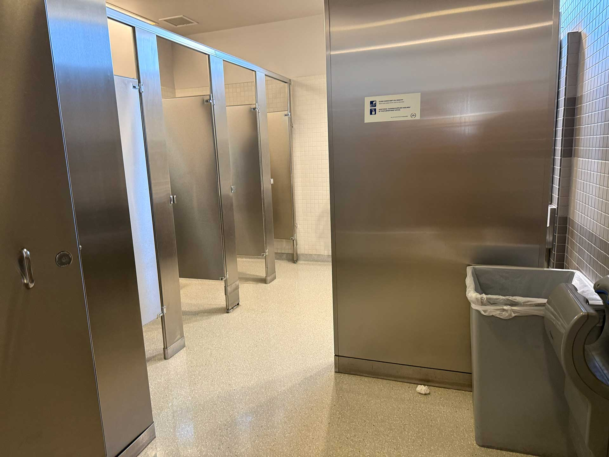
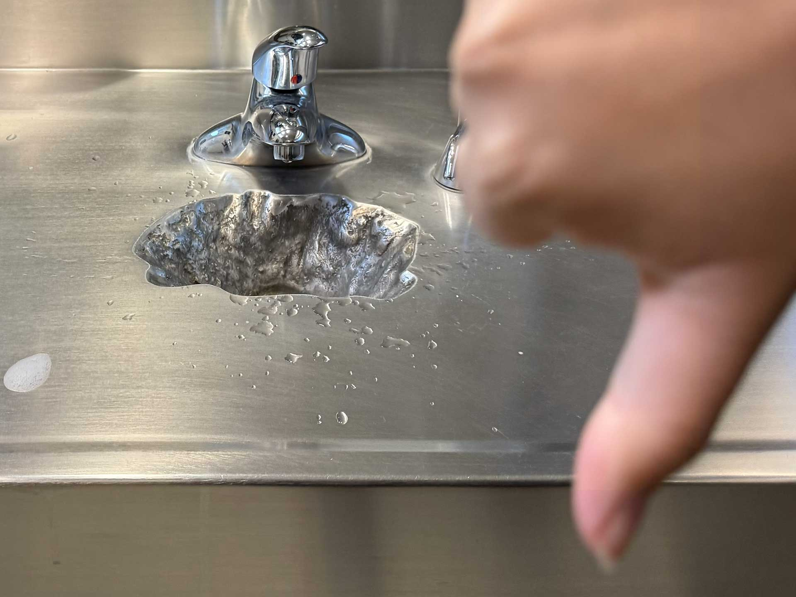

Full Review:
This bathroom almost impressed me at first. I'm a bit of a sucker for the entrance for the upper floor library restrooms; they're sleek and snazzy, though, I'd imagine not the most easy to access for a wheelchair user since there are some kind of tight corners. The initial view upon entering it was almost maze-like, with a wall and the disabled bathroom obscuring the other bathrooms. Looking up, I saw that this bathroom has a fire alarm that appears to be able to flash for Deaf bathroom users, which is cool. Actually using it unfortunately revealed its flaws, however; due to how high up the restroom is, it likely doesn't get cleaned often, and it shows.

Before we get to matters of the toilet, I want to take a moment to acknowledge the extra-toilet amenities. There was a metal container to dispose of period products and a collapsible platform to place one's bags. At the risk of exposing my lack of rigor in checking this bathroom, I did not check to see if this platform could actually unfold and support the weight of a bookbag (UPDATE: as of 2-4-2026 at 11:05 AM, at least one of these platforms work, but it tilts down ever so slightly, making me feel deeply nervous putting my water bottle on it). The toilet paper at the time of checking was filled, and seat covers were plentiful.
Now, onto the toilet.
I could literally see someone's final meal splattered in the toilet bowl, and, giving this toilet the benefit of the doubt, assumed that perhaps the flush wasn't quite strong enough to wash away this person's suffering. Much to my chagrin, however, the fecal matter remained stuck to the bowl, having clearly sat around long enough to dry out. I don't blame anyone for not wanting to regularly make the 8-story trek to clean a toilet, but these things are worth noting.
The sinks were a case study in the uncanny valley. There wasn't anything necessarily wrong with the sinks,per se, but the globs of water covering the sink told me that the sinks weren't properly designed to containwater for hand-washing. Perhaps the sink bowl was too spherical and kept bouncing water droplets back to the counter. I believe it may be slightly too small, as well. The third sink from the left was instead of a normal sink bowl, crater-shaped. It literally looked like someone spilled corrosive acid onto the metal and, out of fear of repercussion, slapped a faucet on top of it and called it a sink. I do not understand the point of these sinks; they make it harder to wash your hands and they look terrible. These sinks being fully metal was also offputting.

Finally, there is the case of hand-drying. Fortunately, there was a paper towel dispenser that was nice and stocked, but none of the 3 air-dryers worked. I'm not sure if these dryers have been rendered obsolete or not worth maintaining, but I found that bizarre.
As a bonus, I decided to check if the pad and tampon dispensaries were stocked. They were, which is cool.
Overall, most of this bathroom was completely unremarkable, and I presume the only part that I will continue to remember is an anomalous experience. If you were to tell me you were going to this bathroom, that information wouldn't mean much of anything to me. It's fine.